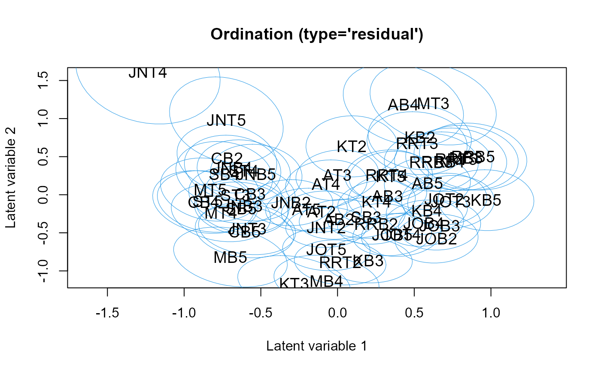

Plots latent variables and their corresponding coefficients (biplot).
# S3 method for class 'gllvm'
ordiplot(
object,
biplot = FALSE,
ind.spp = NULL,
alpha = 0.5,
main = NULL,
which.lvs = c(1, 2),
predict.region = FALSE,
level = 0.95,
jitter = FALSE,
jitter.amount = 0.2,
s.colors = 1,
s.cex = 1.2,
symbols = FALSE,
cex.spp = 0.7,
spp.colors = "blue",
arrow.scale = 0.8,
arrow.spp.scale = 0.8,
arrow.ci = TRUE,
arrow.lty = "solid",
fac.center = FALSE,
spp.arrows = NULL,
spp.arrows.lty = "dashed",
cex.env = 0.7,
lab.dist = 0.1,
lwd.ellips = 0.5,
col.ellips = 4,
lty.ellips = 1,
type = NULL,
rotate = TRUE,
...
)an object of class 'gllvm'.
TRUE if both latent variables and their coefficients are plotted, FALSE if only latent variables.
the number of response variables (usually, species) to include on the biplot. The default is none, or all if biplot = TRUE.
a numeric scalar between 0 and 1 that is used to control the relative scaling of the latent variables and their coefficients, when constructing a biplot.
main title.
indices of two latent variables to be plotted if number of the latent variables is more than 2. A vector with length of two. Defaults to c(1,2).
if TRUE or "sites" prediction regions for the predicted latent variables are plotted, defaults to FALSE. EXTENSION UNDER DEVELOPMENT: if "species" uncertainty estimate regions for the estimated latent variable loadings are plotted. Works only if biplot = TRUE.
level for prediction regions.
if TRUE, jittering is applied on points.
numeric, positive value indicating an amount of jittering for each point, defaults to 0.2 (jitter range).
colors for sites
size of site labels
logical, if TRUE sites are plotted using symbols, if FALSE (default) site numbers are used
size of species labels in biplot
colors for sites, defaults to "blue"
positive value, to scale arrows
positive value, to scale arrows of species
represent statistical uncertainty for arrows in constrained or concurrent ordination using confidence or prediction interval? Defaults to TRUE
linetype for arrows in constrained
logical. If TRUE place labels for binary variables at their estimated location.
plot species scores as arrows if outside of the range of the plot? Defaults to FALSE for linear response models and TRUE for quadratic response models.
linetype for species arrows
size of labels for arrows in constrained ordination
distance between label and arrow heads. Value between 0 and 1
line width for prediction ellipses. See graphical parameter lwd.
colors for prediction ellipses.
line type for prediction ellipses. See graphical parameter lty.
which type of ordination plot to construct. Options are "residual", "conditional", and "marginal". Defaults to "residual" for GLLVMs with unconstrained latent variables and "conditional" otherwise.
logical, if TRUE (default) latent variables are rotated to their principal direction using singular value decomposition
additional graphical arguments.
Function constructs a scatter plot of two latent variables, i.e. an ordination plot. Latent variables are re-rotated to their principal direction using singular value decomposition, so that the first plotted latent variable does not have to be the first latent variable in the model. If only one latent variable is in the fitted model, latent variables are plotted against their corresponding row indices. The latent variables are labeled using the row index of the response matrix y.
Coefficients related to latent variables are plotted in the same figure with the latent
variables if biplot = TRUE. They are labeled using the column names of y. The number
of latent variable coefficients to be plotted can be controlled by ind.spp. An argument alpha
is used to control the relative scaling of the latent variables and their coefficients.
If alpha = 0.5, the latent variables and their coefficients are on the same scale.
For details for constructing a biplot, see Gabriel (1971).
For a quadratic response model, species optima are plotted. Any species scores that are outside the range of the predicted site scores are not directly plotted, but their main direction is indicated with arrows instead. This ensures that the plot remains on a reasonable scale.
Effects of environmental variables in constrained ordination are indicated with arrows. If any of the arrows exceeds the range of the plot, arrows are scaled to 80 but so that the relative contribution of predictors is maintained. If standard errors are available in the provided model, the slopes of environmental variables for which the 95 are slightly less intensely coloured.
For constrained ordination, a conditional plot includes both fixed- and random-effects to
optimally represent species co-occurrence patterns, corresponding to "conditional" site scores in getLV.gllvm.
Marginal corresponds to an ordination plot that excludes residual patterns (i.e. excluding the random-effect),
so that it is only available with num.lv.c>0 or num.RR>0. A conditional plot requires num.lv.c>0.
The "residual" type corresponds to an ordination diagram of only residual patterns.
See getLV.gllvm for details.
- If error is occurred when using ordiplot(), try full name of the function ordiplot.gllvm() as functions named 'ordiplot' might be found in other packages as well.
Gabriel, K. R. (1971). The biplot graphic display of matrices with application to principal component analysis. Biometrika, 58, 453-467.
#'# Extract subset of the microbial data to be used as an example
data(microbialdata)
y <- microbialdata$Y[, order(colMeans(microbialdata$Y > 0),
decreasing = TRUE)[21:40]]
fit <- gllvm(y, family = poisson())
fit$logL
#> [1] -4242.668
ordiplot(fit, predict.region = TRUE)

if (FALSE) { # \dontrun{
#'## Load a dataset from the mvabund package
data(antTraits, package = "mvabund")
y <- as.matrix(antTraits$abund)
fit <- gllvm(y, family = poisson())
# Ordination plot:
ordiplot(fit)
# Biplot with 10 species
ordiplot(fit, biplot = TRUE, ind.spp = 10)
} # }